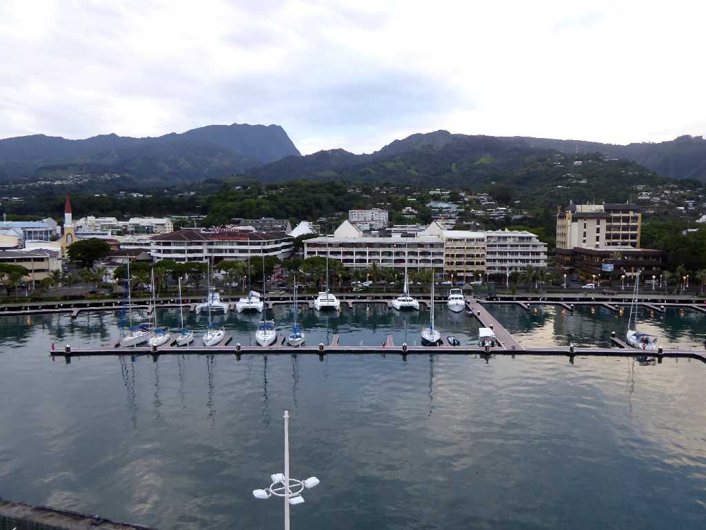
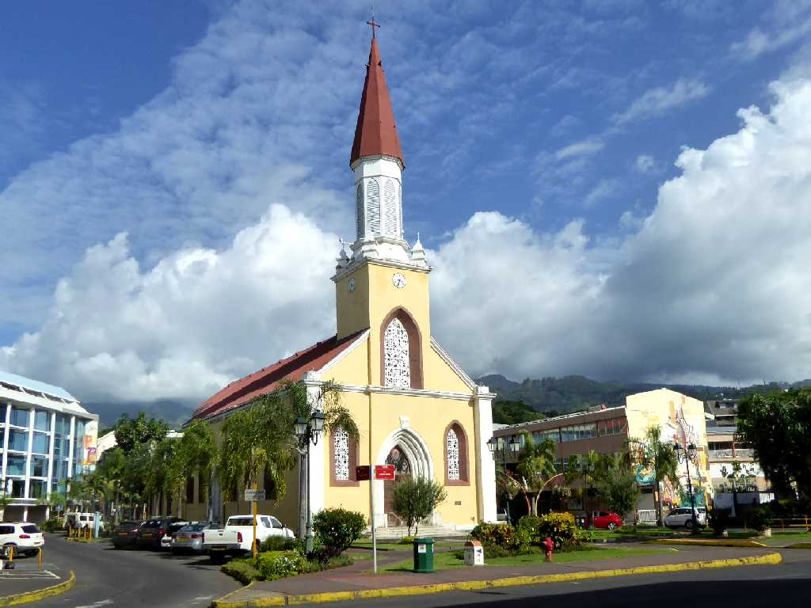
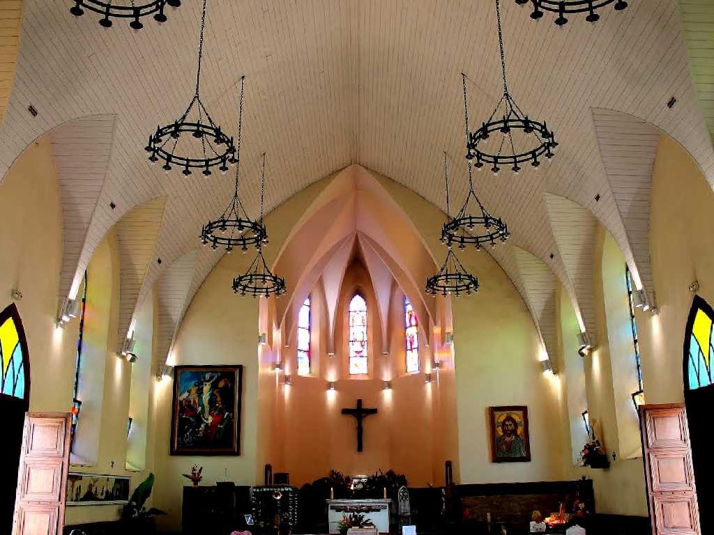
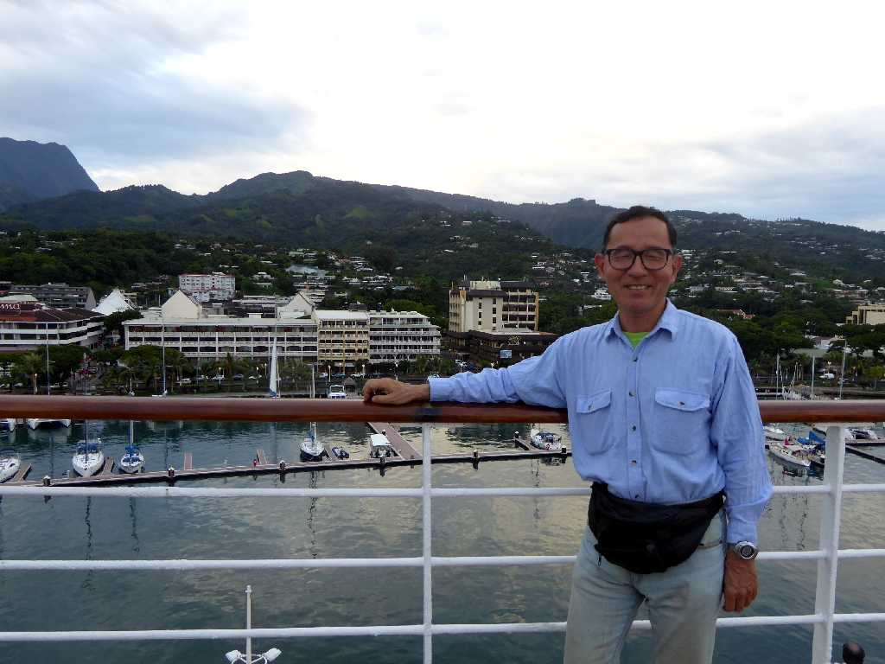

Port Papeete Tahiti Island
死ぬまでに一度は訪れて見たいと云われる１１８の島々からなる南国の楽園タヒチの中心地パペーテ

Cathédrale Notre Dame Papeete
ポリネシア人により１８５７年に創られたノートルダム大聖堂はタヒチのキリスト教が始まった場所として知られている

Altar Cathédrale Notre Dame

March 12 2016 Port Papeete
地球一周の船旅出港８７日目４１,７４８ｋｍ航行しパペーテ港に着岸